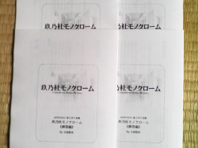
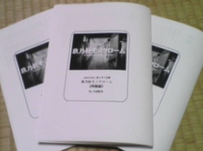

【※お知らせ※】
2009.05.25
解答編を、公開しました！
頂いた応募解答は全７通。
残念ながらMYSCON10夜の部の参加者の方には、正解者はいらっしゃいませんでした。
しかし！ それ以外の方で１通のみ完全正答が！ その方のお名前は……
・
・
・
・
・
・
・
・
・
・
相応恣意さん、あなたが名探偵です！
相応恣意さんのサイト：
「メビウスの輪」の表側
参りました！（ぎゃふん）
【！告知！】
MYSCON10に便乗して、犯人当て企画をやります！
みなさまの熱い挑戦をお待ちしております！
| 問題編 |
以下の３種類を用意しました。内容はいずれも同じです。
|
|---|
| 解答編 |
以下の３種類を用意しました。内容はいずれも同じです。
|
| 解答応募方法 |
解答応募は締め切りました。
ありがとうございました。 |
| 内容 |
県下有数の進学校、玖乃杜高校。
新入生の花房律は、クラスメートから奇妙な噂を聞く。
この学校には伝説の“美少女探偵” がいるというのだ。
一笑に付す花房だったが……。
誰かがなにかをたくらんでる。楽しく不穏な学園ミステリ。
|
| 賞品 |
ささやかながら、賞品を用意しました。
ただし誠に勝手ながらMYSCON10夜の部の参加者の方のみを対象とさせていただきます。
MYSCON10夜の部に参加する方で、かつ、もっともエレガントな解答とこちらで判断した一名様に、以下のＤＶＤを差しあげます。
- 『安楽椅子探偵 ON AIR 綾辻行人・有栖川有栖からの挑戦状６』
- ロバート・アルドリッチ監督『北国の帝王』
|
| 補足 |
２年前のMYSCON8犯人当て企画『ザ・ラスト・トリック』は MYSCON公式企画でしたが、今回は小田牧央の自主的な個人企画です。 |
2009.05.23
解答受付、締め切りました！
７通の応募を頂きました！ ありがとうございます！
犯人当て小説「
玖乃杜モノクローム」の解答編は、5/23 MYSCON10夜の部にて先行公開、5/25夜 ネット公開です。お楽しみに！
2009.05.16

解答期限まで、一週間を切りました！
ゴールデンウィーク疲れのみなさま、犯人当てで頭脳を酷使してリハビリしましょう！ (^^;)
5/23 MYSCON夜の部での先行公開に備えて、今日は解答編を印刷してきました。
MYSCON公式サイト、最近けっこう更新されています。さまざまな企画の情報が公開されてますので要チェック！
2009.05.11 (その１)
サークル
安楽椅子犯人さまのブログに紹介を頂きました！ ありがとうございます！
# というか、私のほうから進んで挑戦をお願いしました。(^^;)
昨年の夏に発表された『湖岸の盲点』(
安楽椅子犯人)は「ノベルゲーム形式」「倒叙形式(犯人のミスを指摘する)」という斬新なスタイルで驚かされました。同時に、ミステリ作家 大山誠一郎さんのコメント通り「考えればきちんと解くことのできる」誠実かつ丁寧な造りの作品でした。
また、
安楽椅子犯人さまのブログではたびたび犯人当てや謎解き企画の紹介をされていて、こちらも大変ありがたい情報源になっています。
2009.05.11 (その２)
お待たせしました！
解答応募フォームを用意しました！
解答期限は
「2009年 5月23日 午前05:00」 とさせていただきます。
みなさまのご応募、心よりお待ちしております。
2009.05.10 (その１)
大変申し訳ありません、
問題編に記述漏れが一点ありました。
「
■登場人物一覧」に名前が一名抜けていました。
「▼美術部関係者」に
「姫百合 郷（ひめゆり ごう）」を追記しました。
急遽、問題編を修正いたしました。
厳密な記述を要求されるべき犯人当て小説において、あってはならない誤りでした。既に問題編を読み始めていただいていた方、大変申し訳ありません。
2009.05.10 (その２)

5/10
第八回文学フリマ 無事終了致しました。
印刷した問題編は、すべて頒布できました。受けとって頂いた皆様に感謝します。
2009.05.09